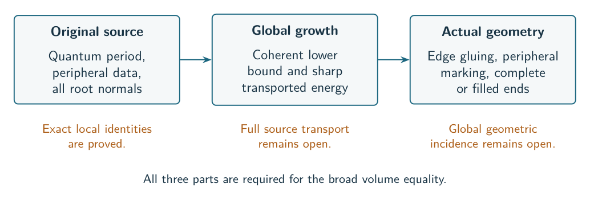

Murakami’s Dream
Quantum invariants and actual hyperbolic volume
The question driving this project is whether the original quantum invariant of a hyperbolic knot has exponential growth determined by the volume of its complement:
We pursue this through the pointed quantum A-structure, exact finite source formulas, positive energies, and hyperbolic angle optimization. The original marked source and peripheral factors stay part of the problem.
The current target allows every fixed bridge width : start with an essential hyperbolic augmented plat, then put independently sufficiently many signed twists into each designated region. The diagram and twists stay fixed as grows. The frontier separates the exact formulas and geometric certificates already available from the general quantum asymptotic still needed.
The general conjecture remains open in this repository. The notes now include a whole-source equality for connected certified augmented links with arbitrary retained half-twist patterns at arbitrary fixed width, as well as the specified knot families, general identities and obstructions. Internal proof review, finite checks, and exploratory calculations are distinguished throughout this guide.


Read the argument in order
The research library organizes the work by question: equality results, quantum sources, geometry, torsors, Fourier methods, the cube, and the general frontier. Each route gives a main argument, its scope, and supporting notes. The figure gallery introduces the main objects visually.
Start with the equality results for the exact knot and link families and their quantifiers. Then read the mechanism: what the source formulas do, where weighted Cauchy enters, and why a local scalar estimate does not finish the problem. The geometry chapter explains what certifies the volume of the actual complement.
The current frontier identifies the remaining general steps. Notation and reproducing audits are reference chapters. The searchable archive contains the full technical notes, scripts, and recorded results; it is not a second reading list to complete before understanding the project.
Where the evidence stands
| Part of the argument | Current scope |
|---|---|
| Volume limit of the original invariant | Signed Conway families with mixed seeds , , arbitrary fixed trees and constructible knot patterns, after sufficiently long signed full fillings; isolated for ; specified pretzel and belt-stack families |
| Exact finite source identities | Original complete source as one positive face coefficient at each folded label, with exact support, measure and even-level carries; all-color compilers and Fourier identities retained |
| Boundary first-normal defect | An explicit two-insertion formula from the full root channel; finite Plancherel gives polynomial cost , without determining the scalar derivative or estimating that channel by the geometric volume |
| Local quantum action | Selected ordinary amplitude on full physical complex compacts; fixed generic jets for all integer-grid physical columns and divided pairs; subexponential complex paired-normal bounds in shrinking channel windows |
| General geometric branch | Under a positive gluing certificate, marked rigidity and the actual critical scheme give a stationary branch with the true volume anchor; contributing source sheet still to be established |
| Common geometric framing | Exactly two prescribed physical-support failures for the certified right-angled cut; every other ordinary factor is on the selected full physical packet, at arbitrary bridge width |
| Exceptional matching block | Exact generic Casimir polynomial and original resolvent period; selected scalar character relation, strict-support Green action and endpoint jets; contributing contour and joint contraction remain open |
| Whole complete source limit | Every connected certified augmented plat with any retained half-twist pattern, at arbitrary fixed width and both level parities; exact face coefficients, a nonzero signed Gaussian and actual polyhedral volume |
| Complete-image external colors | A nonzero asymptotic on a fixed complex neighborhood; the limiting action has the actual complete volume anchor, with marked geometric continuation still to establish |
| General signed long-filled knot equality | Bounds for every remaining reflected color term and the combined far aliases, plus the marked deformed action, remain unresolved |
The cube, Fourier, torsor, and alternative approaches are preserved. A failed intermediate estimate is useful evidence about the argument; it is retained beside the corrected scope.
About this edition
This guide organizes the research snapshot of 30 October 2026. Its chapters explain the current argument; linked technical notes contain the detailed proofs and qualifications. Historical checkpoints remain in the archive and should be read with their dates and later corrections in mind.